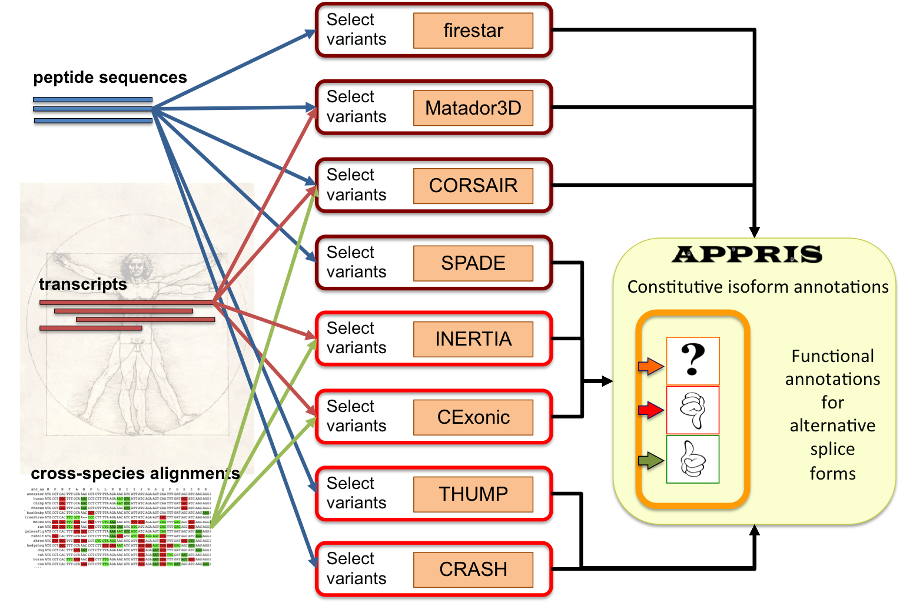

Alternative splicing generates different gene products. Recent studies have estimated that almost 100% of multi-exon human genes produce differently spliced mRNAs. It is important to designate one of the isoforms as the principal isoform in order to predict the potential changes in function, structure or localisation brought about by alternative splicing.
APPRIS annotates variants with biological data such as protein structural information, functionally important residues, conservation of exonic structure and evidence of unusual evolution. APPRIS also makes automatic annotations of principal isoforms.
The system is being used in the context of the scale up of the ENCODE project to annotate 100% of the human genome (20,700 protein-coding genes and 84,408 distinct alternative transcripts from Gencode7, Ensembl62).

APPRIS automates a range of computational methods that are used to annotate alternative splice variants and to define principal variants based.
The goals of the APPRIS system are to annotate alternative variants with reliable biological data and to select the primary variant for each gene. APPRIS is based on a range of complementary computational methods.
The methods in APPRIS are the following:
firestar predicts functionally important residues based on the fireDB database. The predictions are based on the local evaluation of alignments between the query sequence and the structures with functional information that are stored in FireDB. The reliability of predictions is assessed with SQUARE and the functional information is highlighted along with a reliability score.
Functional residues are highly conserved, even across large evolutionary distances. Since these residues are unlikely to have arisen by chance we can also use this to help determine the principal isoform. Variants that have "lost" conserved functional residues are unlikely to be the principal isoform.
Its web server is http://firedb.bioinfo.cnio.es/Php/FireStar.php
Go to the TopProtein structural information is analysed with Matador3D. In practice variant sequences from the same gene are mapped onto 3D structures by running BLAST against the PDB.
Protein structure is much more conserved than sequence and isoforms with large inserts or deletions relative to homologous crystal structures are also not likely to be principal.
Go to the TopProteins are generally comprised of one or more functional regions commonly termed domains. Identifying the functional domains present in a variant can provide insights into the function and to determine the most likely principal isoform.
The presence of functional domains is analysed with Pfamscan, http://pfam.sanger.ac.uk
Variants that have "lost" conserved functional domains are unlikely to be principal isoforms.
Go to the TopCORSAIR carries out BLAST searches against vertebrates to determine the most likely principal isoform.
Transcripts that are conserved over greater evolutionary distances are more likely to be the main variant.
CORSAIR counts the number of species that align correctly and without gaps for each variant.
Go to the TopTHUMP makes unanimous predictions of trans-membrane helices using three different methods: MEMSAT 3.0, Phobius, and PRODIV. A helix has to be predicted by all three methods to be considered reliable.
Transcripts that have "lost" trans-membrane helices are less likely to be the principal isoform. Go to the Top
The presence and location of signal peptides and cleavage sites in amino acid sequences are analysed with SignalP program. And TargetP predicts the sub-cellular location of eukaryotic proteins. CRASH uses a rule-based analysis of these two programs to select only reliable predictions.
Go to the TopIn INERTIA we were looking for exons that have neutral evolutionary rates. The principal isoform is not likely to contain exons that are evolving abnormally quickly or unusual selective pressures.
Transcripts are aligned against vertebrate species using three alignment methods (MAF, PRANK, and Kalign) to limit alignment errors. Evolutionary rates of exons from the same gene are contrasted using SLR. INERTIA flags whole exons that have unusual evolutionary rates.
Variants with differently evolving exons are unlikely to be the principal isoform.
Go to the TopTranscription data is frequently used to study alternative splicing in one species. However, splice isoforms may be conserved between species at a certain evolutionary distance. Therefore, cross-species comparison of splicing isoforms may provide insight into the conservation of alternative splicing.
The assessment of functional alternative splicing requires the identification of the gene product that retains the core biological function. The conservation of exonic structure between orthologous splicing isoforms of two species (human-mouse) would suggest that they exist in both species and that their biological function may be conserved.
If a transcript does not have conserved exonic structure, while all the rest have, this variant is less likely to be the principal isoform.
Conservation of exonic structure is analysed with CExonic, http://cexonic.bioinfo.cnio.es Go to the Top